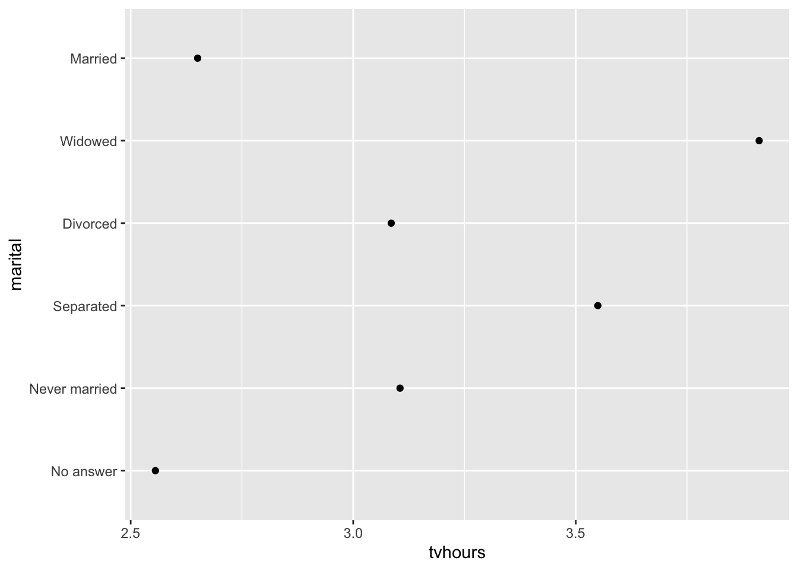
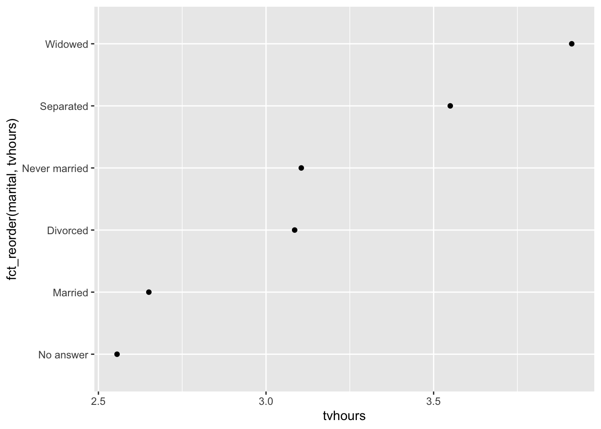
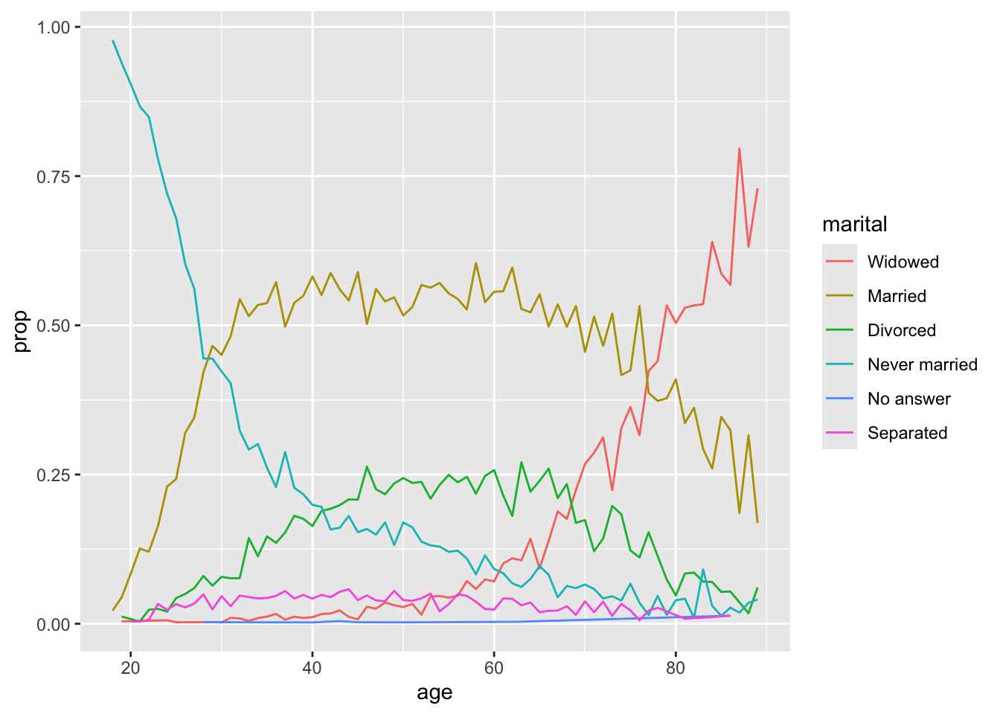

library(forcats)
library(ggplot2)
library(dplyr)
library(gapminder)Factors with forcats
Reference material — not covered in the taught sessions
This page is reference material, not a taught session.
One part of it is not optional, though: coercing factors at the bottom. That is a bug that silently corrupts your data, has reached publication more than once, and is one of the examples in the AI assistants session precisely because it does not error. Read that section even if you skip the rest.
Setup
gss_cat used throughout is a sample of the US General Social Survey that ships with forcats; diamonds ships with ggplot2.
What is a factor?
A factor:
- is how we store categorical variables in R
- contains a fixed and known set of possible values, called its levels
Create one with factor(), which takes factor(vector, levels, labels):
factor(c(0, 1, 1, 1, 0), labels = c('Female', 'Male'))[1] Female Male Male Male Female
Levels: Female MaleMaking factors
Factors can carry an inherent order — but the default may not be the order you want.
data <- factor(c("Dec", "Jun", "Apr"))
data[1] Dec Jun Apr
Levels: Apr Dec JunSorting may not give what you expect:
sort(data)[1] Apr Dec Jun
Levels: Apr Dec JunThat is because:
- factors always have an internal order, even if you don’t specify one
- if you don’t set the levels, they are alphabetical
- if you want a specific order, you have to say so
monthLevels <- c("Jan", "Feb", "Mar", "Apr", "May", "Jun",
"Jul", "Aug", "Sep", "Oct", "Nov", "Dec")
data <- factor(c("Dec", "Jun", "Apr"), levels = monthLevels)
sort(data)[1] Apr Jun Dec
Levels: Jan Feb Mar Apr May Jun Jul Aug Sep Oct Nov DecValues outside your levels disappear silently
factor(c("Dec", "Jum", "Apr"), levels = monthLevels)[1] Dec <NA> Apr
Levels: Jan Feb Mar Apr May Jun Jul Aug Sep Oct Nov DecNote the NA. A typo in your data becomes a missing value with no warning at all. By contrast, readr::parse_factor() tells you:
readr::parse_factor(c("Dec", "Jum", "Apr"), levels = monthLevels)[1] Dec <NA> Apr
attr(,"problems")
# A tibble: 1 × 4
row col expected actual
<int> <int> <chr> <chr>
1 2 NA value in level set Jum
Levels: Jan Feb Mar Apr May Jun Jul Aug Sep Oct Nov DecThis is the pattern to internalise: the base R route fails silently, the tidyverse route complains. When you are reading in real categorical data, prefer the one that complains.
Why bother with forcats?
- It covers the common things you actually need to do with factors.
- It works well with
ggplot2— same authors. - It generally tries to warn you when something looks wrong.
- It is an anagram of “factors”, and it is for categoricals.
fct_inorder()
Sets the levels to the order they appear in the vector.
head(fct_inorder(gss_cat$marital))[1] Never married Divorced Widowed Never married Divorced
[6] Married
Levels: Never married Divorced Widowed Married Separated No answerfct_relevel()
Moves one or more levels to the front.
head(fct_relevel(gss_cat$marital, 'Married'))[1] Never married Divorced Widowed Never married Divorced
[6] Married
Levels: Married No answer Never married Separated Divorced Widowedfct_recode()
Renames existing levels by hand. Note that mapping two old levels to the same new name merges them.
myFactor <- factor(c("M", "F", "O", "M", "P", "M",
"F", "F", "F", "M", "O", "P"))
fct_recode(myFactor,
male = "M", female = "F",
unknown = "O", unknown = "P") [1] male female unknown male unknown male female female female
[10] male unknown unknown
Levels: female male unknownfct_reorder()
The most useful one. It reorders factor levels by another variable, which brings structure to a plot. Compare these two.
Without:
gss_cat |>
group_by(marital) |>
summarise(tvhours = mean(tvhours, na.rm = TRUE)) |>
ggplot(aes(tvhours, marital)) +
geom_point()
With:
gss_cat |>
group_by(marital) |>
summarise(tvhours = mean(tvhours, na.rm = TRUE)) |>
ggplot(aes(tvhours, fct_reorder(marital, tvhours))) +
geom_point()
fct_reorder2()
Probably the second most useful. It orders the levels to match the values at the far right of the plot, so the legend order matches the line order — which is surprisingly helpful when reading a graph.
Without:
gss_cat |>
filter(!is.na(age)) |>
count(age, marital) |>
group_by(age) |>
mutate(prop = n / sum(n)) |>
ggplot(aes(age, prop, colour = marital)) +
geom_line(na.rm = TRUE)
With:
gss_cat |>
filter(!is.na(age)) |>
count(age, marital) |>
group_by(age) |>
mutate(prop = n / sum(n)) |>
ggplot(aes(age, prop, colour = fct_reorder2(marital, age, prop))) +
geom_line() +
labs(colour = "marital")
Others worth knowing
fct_rev()reverses the level orderfct_infreq()orders from most to least frequentfct_lump()combines the least common levels into “other”fct_expand()adds new levelsfct_relabel()relabels levels programmatically
Gotchas: coercing factors
Sometimes the damage is obvious:
x <- factor(c(1, 1, 0, 0, 1, 0, 1, 1, 1, 0))
as.numeric(x) [1] 2 2 1 1 2 1 2 2 2 1Sometimes it is not:
x <- factor(c(1, 1, 2, 5, 3, 3, 1, 6, 5, 1, 6, 2))
as.numeric(x) [1] 1 1 2 4 3 3 1 5 4 1 5 2Those are R’s internal level codes, not your data. The values look plausible, the vector is the right length, and nothing warns you.
WarningThe rule
Never convert a factor straight to numeric. Convert to character first, then to numeric:
x <- factor(c(1, 1, 2, 5, 3, 3, 1, 6, 5, 1, 6, 2))
as.numeric(as.character(x)) [1] 1 1 2 5 3 3 1 6 5 1 6 2Practice
Basics
- Create a factor called
marauderscontaining'moony','wormtail','padfoot'and'prongs'in alphabetical order. - Create a factor called
patronuscontaining'stag','dog','otter', with levels in the order they appear in the input. - Print only the levels of each.
Using diamonds
- Use
dplyr::count()to show how many rows there are for each level ofcut. Is it any different fromforcats::fct_count()? - Use
dplyr::arrange(desc())oncut. What did it actually sort by?
Using gss_cat
- How many levels are there in
relig? - Reorder the levels of
denomby order of appearance. - Take the code below, which plots income by age. Reorder the levels of
rincomebyage. Then instead try just movingn/ato the front. Which reads better?
gss_cat |>
group_by(rincome) |>
summarise(
age = mean(age, na.rm = TRUE),
tvhours = mean(tvhours, na.rm = TRUE),
n = n()) |>
ggplot(aes(age, rincome)) +
geom_point()- Rename the
partyidlevels"Not str republican","Ind,near dem"and"Ind,near rep"to"Not strong republican","Independent, near democrat"and"Independent, near republican". - Edit the code below so the bars are sorted lowest to highest, using
fct_infreq()andfct_rev().
gss_cat |>
ggplot(aes(marital)) +
geom_bar()- Change the code below so the legend colours match the order of the lines at the right-hand side of the plot.
diamonds |>
filter(color == 'J', depth > 55, carat <= 2.5) |>
ggplot(aes(carat, price, col = cut)) +
geom_line(alpha = 0.6)